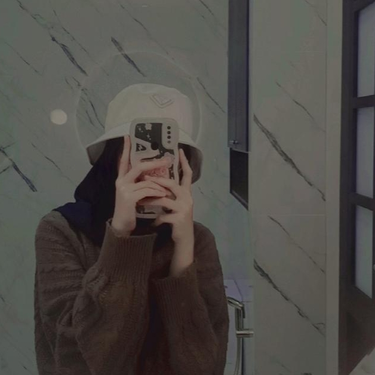

About Me

Nama saya Najlaa Aulia, lahir di Bandung pada tanggal 31 Agustus 2006. Saya merupakan anak pertama dari 4 bersaudara, ayah saya bernama Iman Nurjaman, dan bunda saya bernama Yuliyani Purwati. Saya biasa dipanggil Najlaa, Ala, dan Jaja. Alamat rumah saya berada di Komplek Panghegar Permai 3, Jl. Pamekar Raya No.36, RT.03, RW.01, Kelurahan Mekar Mulya, Kecamatan Panyileukan, Kota Bandung. Saya kelas XI RPL 2, di SMKN 13 Bandung. Saya masih pemula dalam dunia pemrograman, sehingga saya baru mempelajari 3 bahasa pemrograman yaitu; Python, C++, dan HTML.